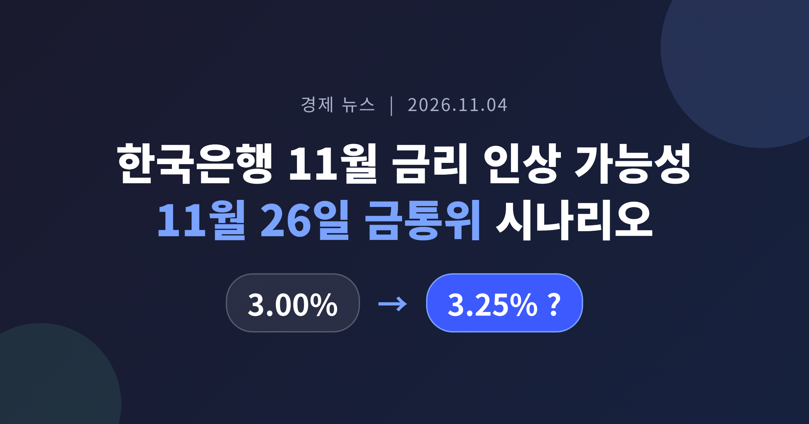
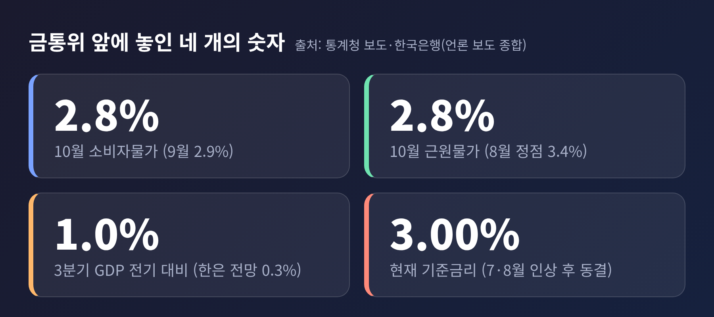
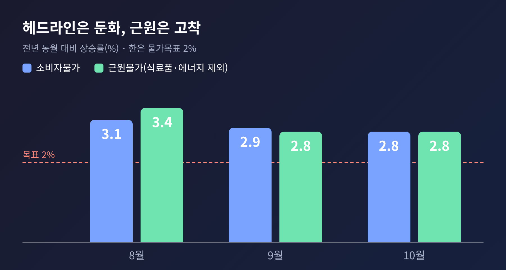
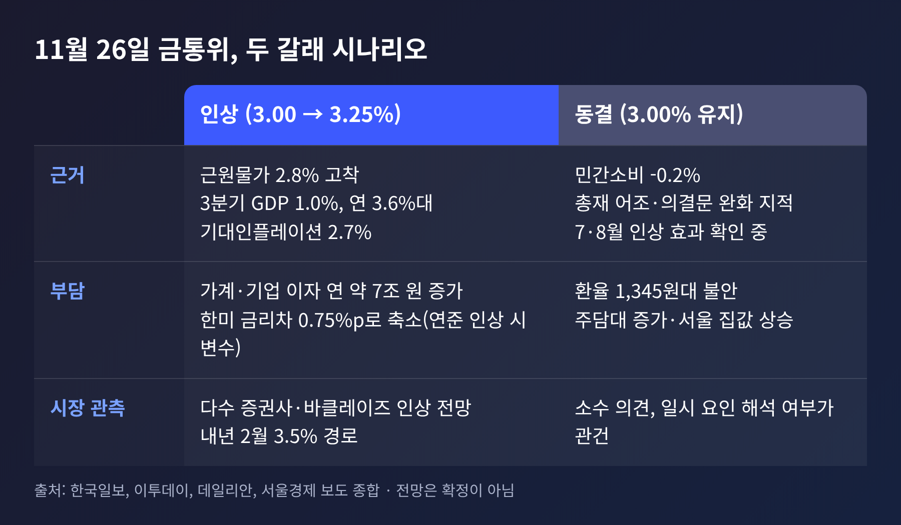
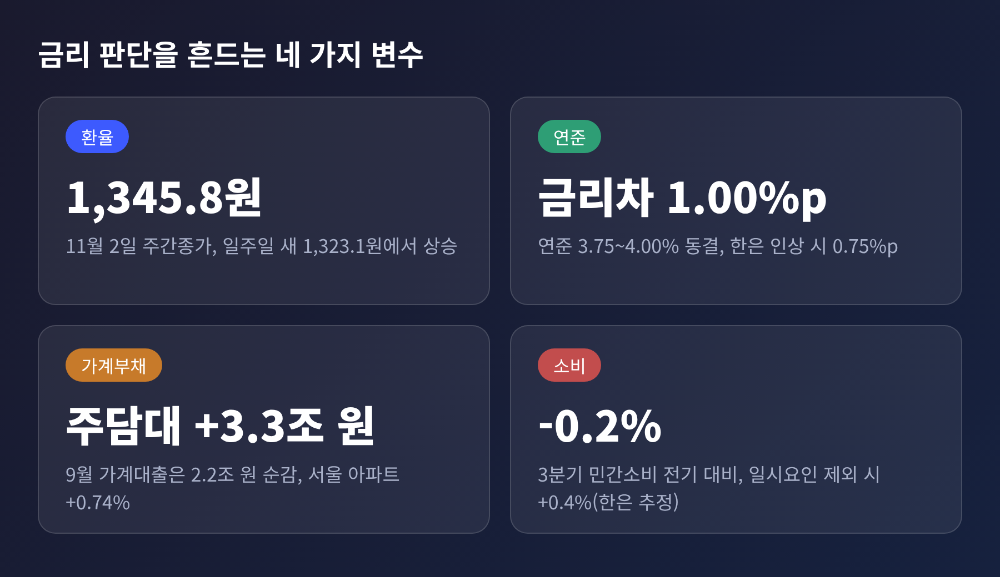
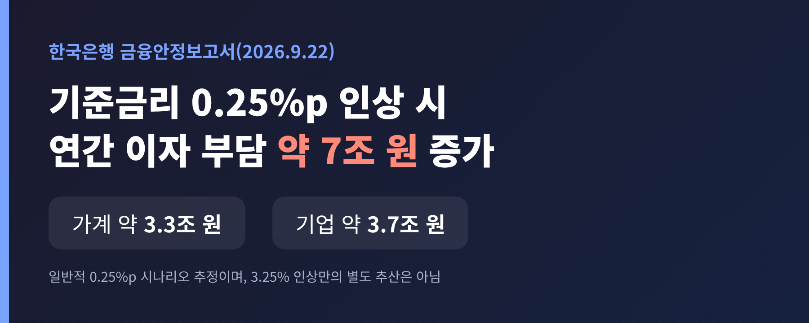

3줄 요약
- 10월 소비자물가는 2.8%, 근원물가도 2.8%입니다. 3분기 성장률은 전기 대비 1.0%로 한은 전망(0.3%)의 세 배였습니다.
- 한국은행은 11월 26일 금통위에서 기준금리를 연 3.00%에서 3.25%로 올릴 가능성이 커졌다는 것이 시장의 대체적인 관측입니다.
- 변수는 환율, 미국 연준, 가계부채, 그리고 꺾인 소비입니다. 0.25%p 인상은 가계·기업 이자 부담을 연 7조 원가량 늘립니다.
오늘은 한국은행 금융통화위원회의 11월 26일 기준금리 결정을 두고, 인상 시나리오와 변수를 정리해 보려 합니다. 지난 이틀간 물가 지표 자체는 다뤄졌으니, 이번 글은 지표 이후의 금통위 셈법과 가계·기업에 미칠 영향에 무게를 둡니다.
한국은행은 7월과 8월에 기준금리를 각각 0.25%p 올린 뒤, 10월 22일 금통위에서 연 3.00%로 동결했습니다. 위원 7명 전원이 동결에 찬성했습니다. 신현송 총재는 3분기 성장률과 10월 물가를 확인한 뒤 추가 인상의 시기와 속도를 판단하겠다고 밝혔습니다.
그 두 지표가 이번 주까지 모두 나왔습니다. (한국일보 10월 22일, 세계일보 11월 4일 보도)

10월 27일 발표된 3분기 실질 GDP는 전기 대비 1.0% 성장했습니다. 한은이 8월에 내놓은 전망치는 0.3%였습니다. 전년 동기 대비로는 3.4%입니다. 반도체 수출이 이끌었고 설비투자는 4.1%, 수출은 2.3% 늘었습니다. (서울경제, 10월 28일)
11월 3일 나온 10월 소비자물가는 전년 동월보다 2.8% 올랐습니다. 9월 2.9%에서 소폭 내렸고, 8월 3.1%에 이어 두 달 연속 둔화입니다. 식료품과 에너지를 뺀 근원물가는 9월과 같은 2.8%였습니다. 파이낸셜뉴스는 이를 두고 "물가 3% 육박에 깜짝 성장까지 11월 금리 인상 명분 쌓였다"고 전했습니다. (뉴스핌 11월 3일, 파이낸셜뉴스 11월 4일)
한 가지 짚어둘 점이 있습니다. 헤드라인 물가는 3%에 닿지 않았고, 오히려 낮아지는 중입니다. '3% 육박'이라는 표현은 5월 이후 여섯 달째 3% 안팎이 이어졌다는 점, 그리고 정부가 석유 최고가격제로 10월 물가를 약 0.8%p 낮췄다는 추정(제외하면 약 3.6%)에서 나온 말입니다. (한국경제, 11월 3일)
예전엔 물가가 꺾이면 곧 금리 인상 압력도 줄어든다고 읽었습니다. 지금은 시선이 근원물가로 옮겨 가 있습니다.
근원물가는 8월 3.4%로 정점을 찍은 뒤 9월과 10월 모두 2.8%에 머물렀습니다. 상반기 평균이 2.3%였으니, 한은 목표 2%와의 격차가 쉽게 줄지 않는 모양새입니다. 한은 물가동향 점검회의에서 이지호 부총재보는 누적된 비용 압력이 소비자 가격으로 옮겨 붙으며 여행, 외식, 전자제품에서 상승률이 높다고 설명했습니다. 휴대전화는 10.8%, 컴퓨터는 26.2% 올랐다는 집계도 있습니다. (이투데이, 뉴스1)

바클레이즈는 근원물가가 견조해 금리 인상 재개의 "충분한 요건"이라고 평가했습니다. KB증권은 기저효과 탓에 11~12월 근원물가가 다시 3%를 넘을 수 있다고 봅니다. 신 총재는 물가 2% 안착 시점을 내후년께로 제시했습니다.
성장도 같은 방향입니다. 한은에 따르면 4분기가 0% 성장이어도 올해 성장률은 3.6%이고, 4분기 1.4% 이상이면 4%에 이릅니다. 기존 전망은 3.3%였습니다. 성장과 물가가 모두 8월 가정보다 세졌다는 것이 인상론의 뼈대입니다.
시장의 중심 경로는 11월 0.25%p 인상으로 3.25%, 이어 2027년 2월 한 차례 더 올려 최종금리 3.5%에 닿는 길입니다. 흥국증권과 iM증권 등이 11월 인상을 예상하고, 바클레이즈도 11월과 내년 2월 각 25bp를 전망합니다. iM증권은 소득 증가가 소비로 이어지면 2027년 1분기 추가 인상도 가능하다고 봅니다. (한국일보 10월 29일, 이투데이)

반대편 논거도 있습니다. 첫째, 10월 동결 의결문에서 "선제적 대응으로 물가 확산을 방지하는 것이 중요하다"는 취지의 문구가 빠졌다는 지적이 있습니다(데일리안). 메리츠증권의 윤여삼 연구원은 총재의 어조가 7·8월만큼 강하지 않아 최종금리 기대를 크게 높이지는 않았다고 분석했습니다. 3.75%까지 가는 신호는 없었다는 뜻입니다.
둘째, 소비입니다. 3분기 민간소비는 0.2% 줄어 2022년 4분기 이후 처음 감소했습니다. 한은은 증시 거래대금 감소와 완성차 파업에 따른 차량 인도 지연 같은 일시 요인을 지목하며, 이를 빼면 0.4% 증가였을 것으로 추정합니다. 일시 요인이라는 해석을 받아들일지가 쟁점입니다. (서울경제)
다만 금통위원별 표결 성향은 공개된 정보로 확인되지 않아, 이 글은 전문가 관측을 정리하는 데 그칩니다.
환율. 원/달러 환율은 10월 26일 주간종가 1,323.1원에서 11월 2일 1,345.8원으로 올랐습니다. 환율 상승은 수입물가를 거쳐 시차를 두고 소비자물가를 밀어 올립니다. 신 총재는 10월 동결을 설명하며, 선제 인상으로 환율이 안정되어 금융안정 위험이 줄었다고 평가했습니다. 환율이 다시 불안해지면 인상 쪽 논리가 한층 힘을 받습니다. (헤럴드경제, 한국일보)
연준. 미국은 10월 27~28일 FOMC에서 3.75~4.00%로 동결했습니다. 위원 2명은 0.25%p 인상을 주장했습니다. 현재 상단 기준 한미 금리차는 1.00%p이고, 한은이 올리면 0.75%p로 좁아집니다. 연준이 12월에 올리면 환율 압력이 커질 수 있다는 우려도 있습니다. 반면 워시 의장은 추가 인상을 분명히 시사하지 않았습니다. (한국일보, 데일리안)
가계부채와 집값. 9월 전 금융권 가계대출은 2조 2,000억 원 줄어 작년 12월 이후 처음 순감했습니다. 그러나 주택담보대출은 3조 3,000억 원 늘었고, 한국부동산원 기준 9월 아파트값은 서울 0.74%, 경기 0.82% 올랐습니다. 금리를 올리면 이자 부담이, 올리지 않으면 부동산과 대출 자극이 걱정되는 구도입니다. (비즈니스워치)
소비와 외부 충격. 한은 권민수 부총재는 중동 긴장, 재정 우려, AI 투자 불확실성, 미국 중간선거 등을 리스크로 꼽았습니다. 이달 말 일몰 예정인 유류세 인하 종료는 물가를 올리는 요인으로 거론됩니다.

한국은행이 9월 22일 금융안정보고서에서 제시한 추정이 가늠자가 됩니다. 기준금리를 0.25%p 올리면 연간 이자 부담이 가계 약 3조 3,000억 원, 기업 약 3조 7,000억 원 등 약 7조 원 늘어납니다. (파이낸셜뉴스, 9월 22일)

시차도 있습니다. 대출금리 반응은 인상 약 5개월 뒤 가장 크고, 연체율에는 약 15개월 뒤 반영됩니다. 7·8월 인상분의 영향이 아직 다 드러나지 않았다는 이야기이기도 합니다. 한계기업 비중은 2024년 4분기 17.1%에서 작년 4분기 19.1%로 올랐고, 취약 차주 가구는 약 6~7%로 추산됩니다.
이 수치는 일반적인 0.25%p 시나리오이고, 3.25% 인상만을 따로 추산한 값은 아닙니다. 평균의 이면에서 변동금리 대출을 쓰는 가계와 이자보상 여력이 낮은 중소기업은 더 크게 체감할 수 있습니다. 한국경제 사설도 금리가 오르면 저소득층이 생계비와 이자 부담을 함께 짊어진다고 지적했습니다.
정리하면 이렇습니다. 지금까지 나온 지표만 놓고 보면 11월 인상 쪽으로 기운 것은 사실입니다. 다만 남은 3주 동안 환율, 유가, 연준, 소비 지표가 움직일 수 있고, 한은 내부의 판단은 알 수 없습니다.
지켜볼 일정은 이렇습니다. 11월 물가(한은은 2%대 후반 전망), 4분기 초반 소비 흐름, 그리고 연준의 12월 신호입니다.
결국 남는 것은 하나입니다. '명분은 쌓였지만 결정은 남아 있다'는 점입니다. 11월 26일 금통위가 3.25%를 택한다면, 그 뒤의 질문은 올리느냐가 아니라 어디서 멈추느냐가 될 것 같습니다.
본 글은 공개된 언론 보도를 정리한 정보 제공용 해설이며, 투자 권유가 아닙니다. 금리 전망은 시장 관측일 뿐 확정된 사실이 아니고, 투자와 대출 관련 판단과 책임은 본인에게 있습니다.